경비지도사-2차(경호학) (2022-11-12 기출문제)
1. 대통령 등의 경호에 관한 법률상 '경호'에 관한 정의이다. ( )에 들어갈 내용으로 옳은 것은?
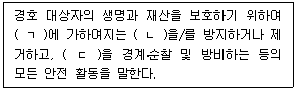
- ㄱ: 신체, ㄴ: 위해, ㄷ: 특정 지역
- ㄱ: 신체, ㄴ: 손해, ㄷ: 모든 지역
- ㄱ: 개인, ㄴ: 위해, ㄷ: 특정 지역
- ㄱ: 개인, ㄴ: 위험, ㄷ: 모든 지역
(정답률: 알수없음)

2. 우리나라 경호에 관한 설명으로 옳지 않은 것은?
- 소방청 119구조구급국장은 대통령경호안전대책위원회의 위원이다.
- 대통령경호처장은 대통령이 임명하고, 경호처의 업무를 총괄하며 소속공무원을 지휘ㆍ감독한다.
- 대통령 당선인은 경호의 대상이지만 대통령 당선인의 가족은 경호대상이 아니다.
- 경호의 성문법원에는 헌법, 법률, 조약, 명령을 들 수 있다.
(정답률: 알수없음)
3. 대통령 등의 경호에 관한 법률상 경호공무원에 대한 사법경찰권 지명권자는?
- 검찰총장
- 서울중앙지방검찰청 검사장
- 경찰청장
- 서울특별시경찰청장
(정답률: 알수없음)
4. 다음에서 설명하는 경호의 원칙은?
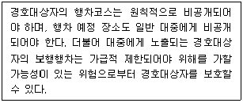
- 목표물 보존의 원칙
- 자기담당구역 책임의 원칙
- 하나로 통제된 지점을 통한 접근의 원칙
- 자기희생의 원칙
(정답률: 알수없음)
5. 다음 대한민국 경호역사에서 두 번째로 일어난 것은?
- 중앙정보부 경호대가 발족되었다.
- 경무대 경찰서가 신설되었다.
- 치안본부 소속의 101경비대를 101경비단으로 변경하였다.
- 대통령경호실을 대통령경호처로 변경하였다.
(정답률: 알수없음)
6. 조선후기 정조 때 설치한 경호기관은?
- 장용영
- 호위청
- 내순검군
- 삼별초
(정답률: 알수없음)
7. 다음에서 설명하는 경호의 원칙은?
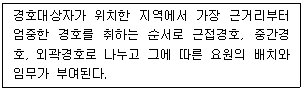
- 3중 경호의 원칙
- 두뇌 경호의 원칙
- 방어 경호의 원칙
- 은밀 경호의 원칙
(정답률: 알수없음)
8. 국민보호와 공공안전을 위한 테러방지법령상 대테러특공대를 설치ㆍ운영하지 않는 기관은?
- 국방부
- 해양경찰청
- 국가정보원
- 경찰청
(정답률: 알수없음)
9. 다음에서 설명하는 경호조직의 원칙은?
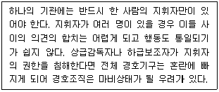
- 경호체계 통일성의 원칙
- 경호지휘단일성의 원칙
- 경호기관단위작용의 원칙
- 경호협력성의 원칙
(정답률: 알수없음)
10. 경호임무의 수행절차에 관한 설명으로 옳은 것은?
- 예방단계: 평가단계로 경호 실시 결과 분석
- 대비단계: 정보활동단계로 법제를 정비하여 우호적 경호환경 조성
- 대응단계: 경호활동단계로 경호인력을 배치하여 지속적인 경계활동 실시
- 학습단계: 안전활동단계로 위해정보 수집을 위한 보안활동 전개
(정답률: 알수없음)
11. 대통령 등의 경호에 관한 법률상 '경호 대상'에 관한 내용이다. ( )에 들어갈 숫자는?
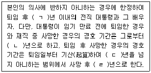
- ㄱ: 5, ㄴ: 5, ㄷ: 10, ㄹ: 5
- ㄱ: 5, ㄴ: 10, ㄷ: 10, ㄹ: 5
- ㄱ: 10, ㄴ: 5, ㄷ: 5, ㄹ: 5
- ㄱ: 10, ㄴ: 5, ㄷ: 10, ㄹ: 5
(정답률: 알수없음)
12. 경호작용의 기본 고려요소에 관한 설명으로 옳지 않은 것은?
- 자원 - 기본적으로 고려되어야 할 사항에 포함된다.
- 계획수립 - 변화의 가능성 때문에 융통성 있게 한다.
- 책임 - 경호임무는 명확하게 부여하고, 각각의 임무형태에 대한 책임이 부과된다.
- 보안 - 수행원과 행사 세부일정은 공개하고, 경호경비상황은 보안을 유지한다.
(정답률: 알수없음)
13. 경호원의 활동 수칙에 관한 내용으로 옳지 않은 것은?
- 경호대상자에게 스스로 안전에 대처할 수 있도록 일상적 경호수칙을 만들어 경각심을 높이게 한다.
- 경호업무 효율성 향상을 위해 경호대상자의 종교, 병력, 복용하는 약물에 대해서도 파악한다.
- 위해자와 타협적인 행동을 하지 않는다.
- 최대한 비노출경호를 위해 권위주의적 자세를 가진다.
(정답률: 알수없음)
14. 다음 ( )에 들어갈 경호의 안전대책은?
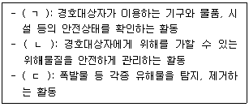
- ㄱ: 안전검사, ㄴ: 안전조치, ㄷ: 안전점검
- ㄱ: 안전조치, ㄴ: 안전점검, ㄷ: 안전검사
- ㄱ: 안전점검, ㄴ: 안전검사, ㄷ: 안전조치
- ㄱ: 안전조치, ㄴ: 안전검사, ㄷ: 안전점검
(정답률: 알수없음)
15. 경호의 특성을 올바르게 구분한 것은?
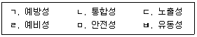
- 선발경호-(ㄱ, ㄴ, ㄹ, ㅁ), 근접경호-(ㄷ, ㅂ)
- 선발경호-(ㄱ, ㄷ, ㅂ), 근접경호-(ㄴ, ㄹ, ㅁ)
- 선발경호-(ㄴ, ㄷ, ㅂ), 근접경호-(ㄱ, ㄹ, ㅁ)
- 선발경호-(ㄷ, ㅂ), 근접경호-(ㄱ, ㄴ, ㄹ, ㅁ)
(정답률: 알수없음)
16. 근접경호의 원칙에 관한 설명으로 옳지 않은 것은?
- 출입문 통과 시 경호원이 먼저 통과하여 안전을 확인한다.
- 이동 속도는 경호대상자의 보폭 등을 고려한다.
- 복도, 계단, 보도를 이동할 때에는 경호대상자를 공간의 가장자리로 유도하여 위해발생 시 여유공간을 확보한다.
- 경호원은 경호대상자의 최근접에서 움직이도록 한다.
(정답률: 알수없음)
17. 근접경호 업무가 아닌 것은?
- 차량 대형 형성
- 우발상황 발생 시 대피
- 행사장에 대한 현장 답사
- 돌발상황 발생 시 경호대상자 방호
(정답률: 알수없음)
18. 도보대형 형성 시 고려사항은 모두 몇 개인가?
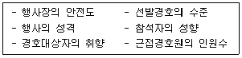
- 3개
- 4개
- 5개
- 6개
(정답률: 알수없음)
19. 다음에서 설명하는 경호의 방호대형은?
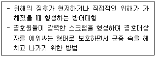
- 개방 대형
- 함몰 대형
- 일렬 세로대형
- 방어적 원형대형
(정답률: 알수없음)
20. 근접경호의 특성 중 기만성에 해당하는 것은?
- 경호대상자의 안전확보를 위해 경고 후 즉각 대피를 실시한다.
- 경호원의 체위를 통한 방벽을 구축하였다.
- 차량대형, 기동시간 등을 변칙적으로 운영하여 위해기도자가 상황을 오판하도록 한다.
- 기동수단, 도보대형이 노출되고, 매스컴에 의해 행사일정 등이 알려진다.
(정답률: 알수없음)
21. 출입자 통제에 관한 설명으로 옳은 것은?
- 안전구역 설정권 내에 출입하는 인적ㆍ물적 제반 요소에 대한 안전활동을 말한다.
- 오관에 의한 검색은 지양하고, 문형 금속탐지기와 휴대용 금속탐지기 등 기계에 의한 검색을 실시한다.
- 참석자들의 안전을 고려하여 모든 출입통로를 사용하여 출입통제를 실시한다.
- 행사장으로부터 연도경호의 안전거리를 벗어난 주차장일지라도 통제범위에 포함시켜 운영한다.
(정답률: 알수없음)
22. 출입자 통제업무에 관한 설명으로 옳지 않은 것은?
- 인적 출입관리는 행사장의 모든 출입구에 대한 검색이나 수상한 자의 색출을 목적으로 한다.
- 지연참석자에 대해서는 검색 후 별도 지정된 통로로 출입을 허용한다.
- 참석자가 시차별로 지정된 출입통로를 통하여 입장하도록 한다.
- 출입통로지정은 구역별 통로를 다양화하여 통제의 범위를 넓혀 관리의 효율성을 높인다.
(정답률: 알수없음)
23. 비표 운용에 관한 설명으로 옳은 것은?
- 보안성 강화를 위해 비표의 종류는 많을수록 좋으며 리본, 명찰 등이 있다.
- 구역별로 다른 색상으로 구분하여 비표를 운용하면 통제가 용이하다.
- 비표는 식별이 용이하도록 선정하여야 하며, 복잡하게 제작되어야 한다.
- 비표는 행사참석자에게 행사일 전에 미리 배포하여 출입혼잡을 예방하여야 한다.
(정답률: 알수없음)
24. 사주경계에 관한 설명으로 옳지 않은 것은?
- 시각의 한계를 고려하여 주위경계의 범위를 선정하고, 인접한 경호원과의 경계범위를 중복되지 않게 실시한다.
- 돌발상황을 제외하고는 고개를 심하게 돌리거나 완전히 뒤돌아보는 등의 사주경계를 하지 않는다.
- 경호대상자의 주위 사람들의 눈과 손, 표정, 행동에 주목하여 경계한다.
- 사주경계의 대상은 인적ㆍ물적ㆍ지리적 취약요소들을 총망라해야 한다.
(정답률: 알수없음)
25. 우발상황에 관한 설명으로 옳은 것을 모두 고른 것은?
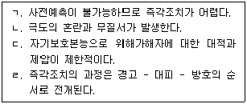
- ㄱ, ㄹ
- ㄱ, ㄴ, ㄷ
- ㄴ, ㄷ, ㄹ
- ㄱ, ㄴ, ㄷ, ㄹ
(정답률: 알수없음)
26. 경호임무수행 중 우발상황 발생 시 각 경호원의 대응으로 옳은 것을 모두 고른 것은?
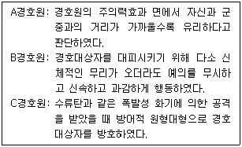
- A, B
- A, C
- B, C
- A, B, C
(정답률: 알수없음)
27. 차량경호에 관한 일반적인 상황에 관한 내용이다. 다음 차량의 순서(앞-중간-뒤)로 옳은 것은?
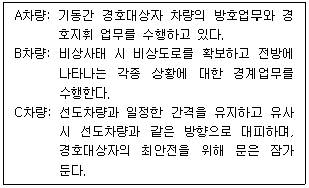
- A - B – C
- A - C – B
- B - C – A
- C - A - B
(정답률: 알수없음)
28. 검식활동에 관한 설명으로 옳지 않은 것은?
- 음식물은 전문요원에 의한 검사를 실시한다.
- 음식물 운반 시에도 근접 감시를 실시한다.
- 안전대책작용으로 사전예방경호이면서 근접경호에 해당된다.
- 식재료의 구매, 운반, 저장과정, 조리 등 경호대상자에게 음식물이 제공될 때까지 모든 과정의 위해요소를 제거하는 것이다.
(정답률: 알수없음)
29. 안전검측활동에 관한 설명으로 옳은 것은?
- 위해기도자의 입장보다는 경호대상자의 입장에서 검측을 실시한다.
- 가용 인원의 최대 범위에서 중복이 되지 않도록 철저히 실시한다.
- 경호대상자가 짧은 시간 머물 곳을 실시한 후 장시간 머물 곳을 체계적으로 검측한다.
- 비공식행사에서도 비노출 검측활동을 실시할 수 있다.
(정답률: 알수없음)
30. 경호원의 복제에 관한 설명으로 옳지 않은 것을 모두 고른 것은?
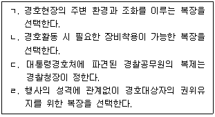
- ㄱ, ㄴ
- ㄱ, ㄹ
- ㄴ, ㄹ
- ㄷ, ㄹ
(정답률: 알수없음)
31. 경호장비에 관한 설명으로 옳지 않은 것은?
- ｢대통령 등의 경호에 관한 법률｣에서 호신장비와 관련하여 무기에 대한 규정을 두고 있다.
- 경비원이 사용하는 단봉, 분사기는 호신장비에 포함된다.
- 경호업무에서 사용되는 드론은 감시장비에 포함된다.
- 경호현장에서 설치되는 바리케이드나 차량 스파이크 트랩은 인적 방호장비이다.
(정답률: 알수없음)
32. 다음에서 설명하는 경호장비는?
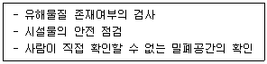
- 호신장비
- 감시장비
- 방호장비
- 검측장비
(정답률: 알수없음)
33. 심폐소생술에 관한 내용으로 옳지 않은 것은?
- 심정지 환자는 골든타임 내에 신속하게 심폐소생술을 실시한다.
- 심폐소생술의 흉부(가슴)압박은 분당 100~120회 속도로 실시한다.
- 심폐소생술 실시 중 자발적인 호흡으로 회복되어도 계속 흉부(가슴)압박을 실시한다.
- 인공호흡에 자신이 없는 경우 흉부(가슴)압박을 실시한다.
(정답률: 알수없음)
34. 경호임무 수행 중 자동심장충격기(AED)를 사용하는 방법으로 옳지 않은 것은?
- 전원이 켜져 있는 상태에서 음성 안내에 따라 사용한다.
- 환자의 피부에 땀이나 물기가 있으면 수건 등으로 닦아내고 패드를 부착한다.
- 제세동 후 소생 징후가 없는 경우 지체 없이 심폐소생술을 실시한다.
- 긴박한 상황에서 정확한 심장충격을 위해 환자를 붙잡은 상태에서 제세동을 실시한다.
(정답률: 알수없음)
35. 경호 환경에 관한 설명으로 옳지 않은 것은?
- 국제 관계와 정세로 인하여 해외에서 우리 국민을 대상으로 한 테러위협이 증가되는 것은 특수적 환경 요인이다.
- 국민의식과 생활양식의 변화로 경호에 비협조적 경향이 나타나는 것은 특수적 환경요인이다.
- 북한의 핵실험 등 도발위협은 특수적 환경 요인이다.
- 과학기술의 발전이 상대적으로 경호환경을 악화시키는 것은 일반적 환경 요인이다.
(정답률: 알수없음)
36. 경호원의 직업윤리에 관한 내용으로 옳지 않은 것은?
- 경호원으로 준법정신의 자세가 필요하다.
- 경호원은 자율적 규제보다 타율적 규제가 우선시되어야 한다.
- 경호대상자의 생명과 재산을 지키기 위한 올바른 가치관을 함양한다.
- 경호대상자의 안전을 위하여 자기희생의 자세를 갖춘다.
(정답률: 알수없음)
37. 경호의전에 관한 설명으로 옳지 않은 것은?
- 우리나라의 공식적 국가 의전서열은 대통령 - 국무총리 - 국회의장 - 대법원장 - 헌법재판소장 순이다.
- 공식적인 의전서열을 가지지 않은 사람의 좌석은 당사자의 개인적ㆍ사회적 지위 및 연령 등을 고려한다.
- 우리나라가 주최하는 연회에서는 자국 측 빈객은 동급의 외국 측 빈객보다 하위에 둔다.
- '상대에 대한 존중과 배려'는 의전의 중요한 원칙 중 하나이다.
(정답률: 알수없음)
38. 국민보호와 공공안전을 위한 테러방지법상 용어의 정의로 옳지 않은 것은?
- 외국인테러전투원: 테러를 실행ㆍ계획ㆍ준비하거나 테러에 참가할 목적으로 국적국인 국가의 테러단체에 가입하기 위하여 이동을 시도하는 외국인
- 테러단체: 국제연합(UN)이 지정한 테러단체
- 테러위험인물: 테러단체의 조직원이거나 테러단체 선전, 테러자금 모금ㆍ기부, 그 밖에 테러 예비ㆍ음모ㆍ선전ㆍ선동을 하였거나 하였다고 의심할 상당한 이유가 있는 사람
- 대테러조사: 대테러활동에 필요한 정보나 자료를 수집하기 위하여 현장조사ㆍ문서열람ㆍ시료채취 등을 하거나 조사대상자에게 자료제출 및 진술을 요구하는 활동
(정답률: 알수없음)
39. 국민보호와 공공안전을 위한 테러방지법상 테러피해에 관한 내용으로 옳지 않은 것은?
- 국가 또는 지방자치단체는 테러의 피해를 입은 사람에 대하여 치료 및 복구에 필요한 비용의 전부 또는 일부를 지원할 수 있다.
- 테러로 인하여 생명의 피해를 입은 사람의 유족에 대해서는 그 피해의 정도에 따라 등급을 정하여 특별위로금을 지급할 수 있다.
- 외교부장관의 허가를 받지 아니하고 방문 및 체류가 금지된 국가 또는 지역을 방문ㆍ체류한 사람의 테러피해의 치료 및 복구에 필요한 비용도 예외 없이 지원하도록 하고 있다.
- 테러로 인하여 신체 또는 재산의 피해를 입은 국민은 관계기관에 즉시 신고하여야 한다.
(정답률: 알수없음)
40. 암살에 관한 설명으로 옳지 않은 것은?
- 암살범의 적개심과 과대망상적 사고는 개인적 동기에 해당된다.
- 뉴테러리즘의 일종으로 불특정 다수를 대상으로 한다.
- 암살범은 자신을 학대하고 무능력을 비판하는 심리적 특징을 보이는 경우도 있다.
- 암살범은 암살에 대한 동기가 확연해지면 빠른 수행방법을 모색하는 경향이 있다.
(정답률: 알수없음)